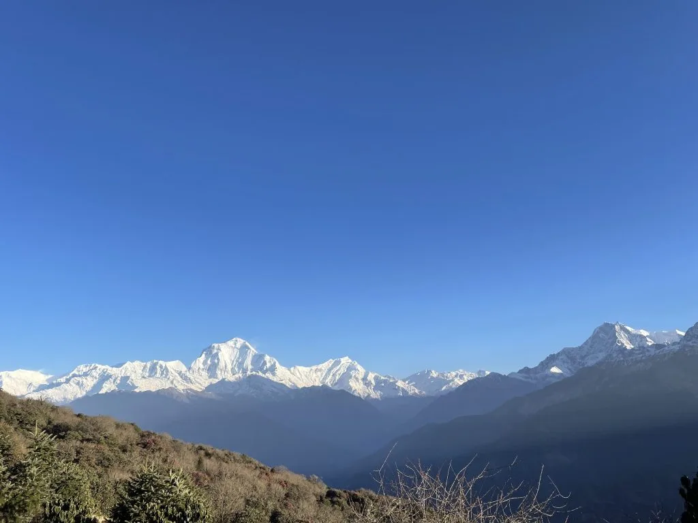
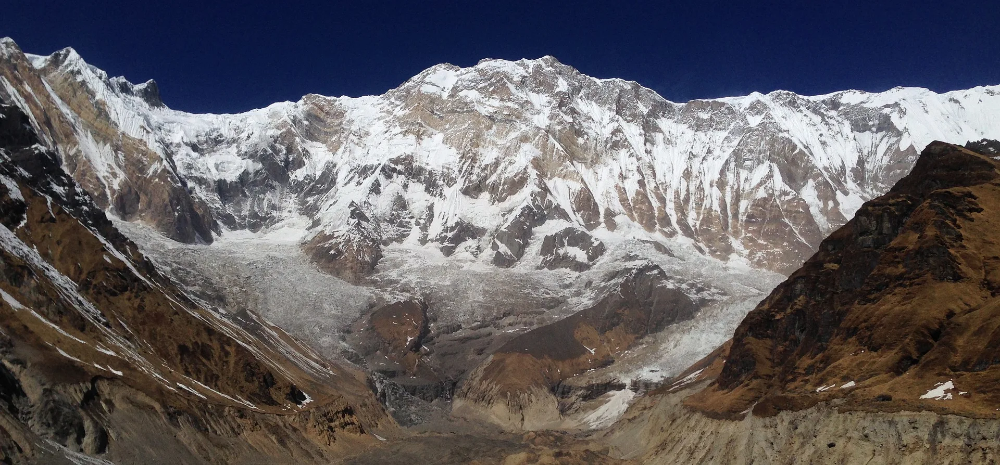
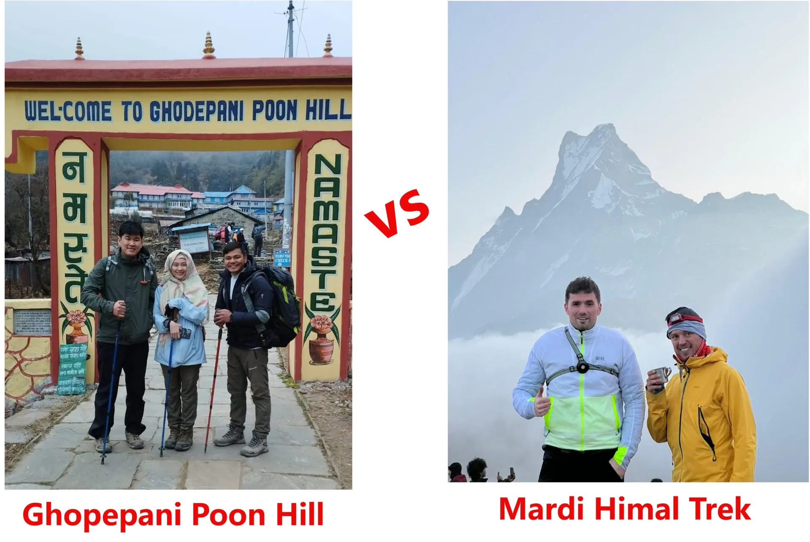
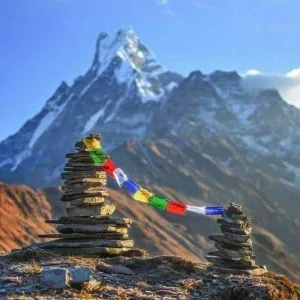
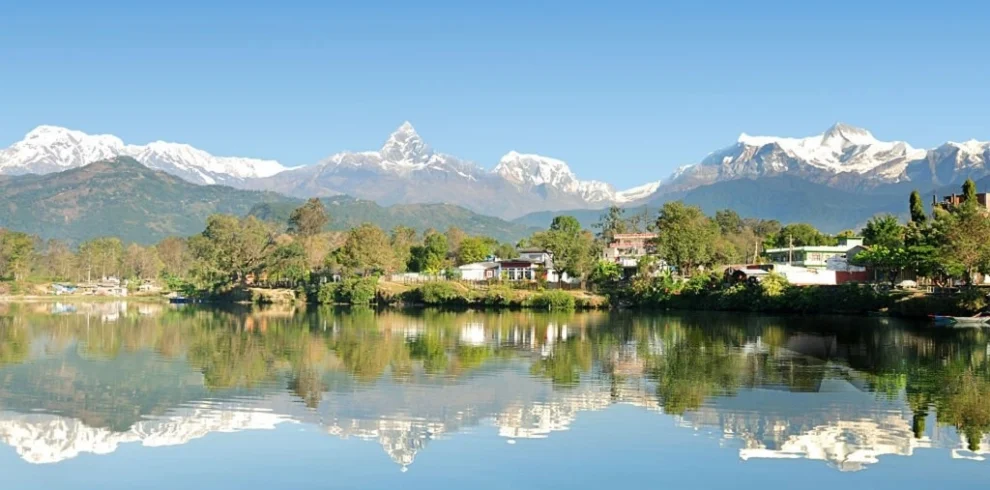
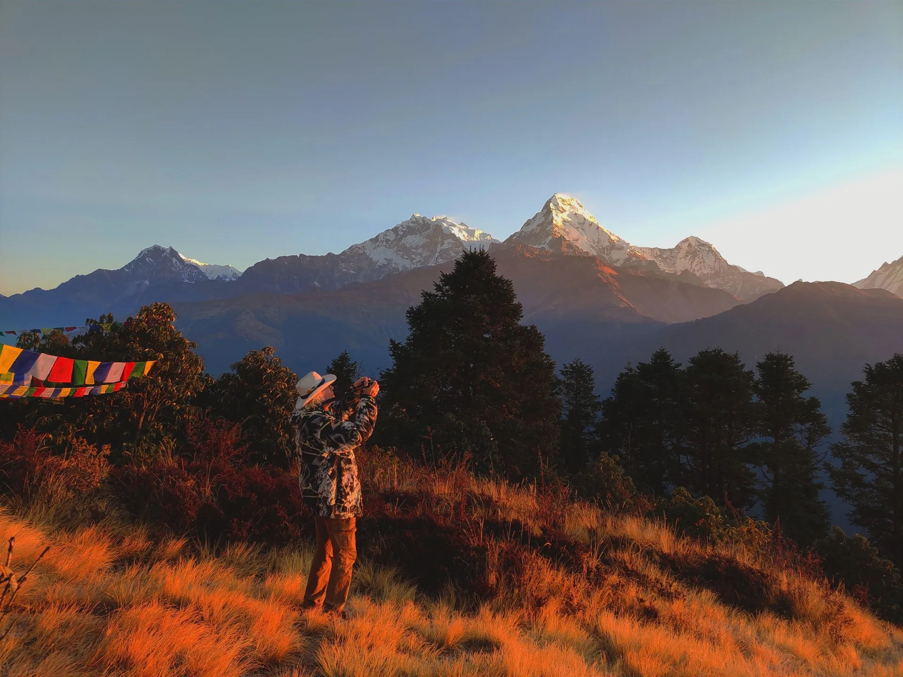

Our Annapurna View Trek (8 Days) with Igloo Himalaya Treks went beyond every expectation we had. What first pulled us towards them was their strict safety protocol and personal care. From start to finish, Sagar and our expert team made sure our Annapurna View Trek was comfortable, safe, and well acclimatized every single day!
Annapurna Region • 8 Days Classic Foothill Trek
5.0
reviews on TripAdvisor
5.0
169 reviews on Google
Annapurna View Trek — 8 Days
Walk from Kande to Australian Camp, Landruk and Ghandruk on our eight-day Annapurna View Trek. Three walking days take you through forest, terraced farmland and Gurung villages, with Annapurna South, Hiunchuli and Machhapuchhre visible when skies are clear. You sleep in village lodges, with the highest overnight stop at Australian Camp, around 2,060 m. Travel through Pokhara connects the trail to Kathmandu, making this a shorter introduction to Nepal’s mountain paths and the life of its villages.

Travelers' Choice
Best of the Best 2026




Key Trip Facts
Duration
8 days (3 walking days)
Difficulty
Easy to Moderate
Max Altitude
2,060 m (6,758 ft)
Destination
Nepal
Activity
Trekking & Cultural Village Walk
Accommodation
Hotels (4N) & Village Lodges (3N)
Transport
Flight / Road & Trail Transfers
Meals
City B'fasts; 3 Meals on Trek
Recommended Season
Spring (Mar–May) & Autumn (Sep–Nov)
Trek Starts
Kande (after drive from Pokhara)
Trek Ends
Ghandruk (followed by drive to Pokhara)
Trek Region
Annapurna
Package Start Point
Kathmandu
Package End Point
Kathmandu
Annapurna View Trek Overview
Our eight-day Annapurna View Trek follows a village route from Kande through Australian Camp and Landruk to Ghandruk. Three walking days combine forest paths, terraced farmland and views of the Annapurna mountains in clear weather. With road access through Pokhara and overnight stays in local lodges, the itinerary offers a shorter introduction to Himalayan trekking.
After arriving in Kathmandu, you travel to Pokhara by your agreed flight or road option. A drive to Kande brings you to the trail, where the climb towards Australian Camp begins. At around 2,060 m, this hilltop stop looks towards Annapurna South, Hiunchuli and Machhapuchhre when clouds clear. You stay overnight in a lodge, with time to rest after the first walk and enjoy the surrounding hillside scenery.
The next stage continues through Pothana and Tolka towards Landruk, passing woodland, hillside farms and village paths. Steps and uneven sections require attention, especially after rain. Landruk sits above the Modi valley, with mountain views in clear weather. The following day takes you down towards the river before climbing to Ghandruk on the opposite hillside.
Ghandruk is a Gurung village with stone houses, cultivated terraces and views towards Annapurna South, Hiunchuli and Machhapuchhre. After the uphill approach, settle into your lodge and take time to walk nearby. Your guide can explain local customs and the village surroundings. The next morning, you leave the walking route and travel by road to Pokhara for another hotel night.
This route stays around 2,100 m or lower, but hills and steps demand preparation. Seven nights and return travel complete the eight-day programme, beginning and ending in Kathmandu.
Key Route Highlights & Destinations
Kande (1,770m)
Australian Camp (2,060m)
Pothana (1,890m)
Tolka (1,700m)
Landruk (1,565m)
Ghandruk (1,940m)
Pokhara (820m)
Kathmandu (1,400m)
3 Walking Days
Annapurna Mountain Views
Gurung Heritage Villages
Pokhara Access
Want to know more about this trek?
Chat with us — real trekking experts, not bots.
Replies within 4 hours
Annapurna View Trek Highlights
Why Book the Annapurna View Trek with Igloo Himalaya Treks?
We help you prepare in Kathmandu and support the village walk through Australian Camp, Landruk and Ghandruk with these arrangements.
Trek Briefing and Gear Check
Before departure, we discuss the itinerary, transport and packing. Your briefing gives you time to ask about daily walking, lodge facilities, equipment and meal arrangements before travelling to Pokhara.
Guide and Porter Support
Your package includes a professional English-speaking guide and one porter for every two trekkers. The guide leads the trail and explains village surroundings, while your porter carries the main trekking luggage.
Equipment Provided for the Trek
We provide a sleeping bag, down jacket and duffel bag for use during the trek. Return all three afterwards. Bring your own boots, clothing and other personal essentials for the journey.
Communication When Plans Change
Weather and road conditions can affect the programme, including domestic flights. Our team explains available options and discusses necessary changes, with additional accommodation or transport costs clarified when services exceed your quotation.
Annapurna View Trek (8 Days) Itinerary: Day by Day Details
Day 1: Arrival in Kathmandu
Tribhuvan International Airport, Kathmandu – 1,400 m / 4,593 ft – Arrival & Trip Briefing
Arrival, private airport transfer and trip briefing
Overnight: 3-star hotel in Kathmandu (around 1,400 m)
Meals: Arrival-day meals not included
Welcome to Nepal. Our representative meets you at Tribhuvan International Airport and transfers you to your hotel in Kathmandu. After checking in, we discuss the route, equipment and walking schedule so you can prepare for the journey.
Depending on your arrival time, you can walk around Thamel or rest after your flight. Use the time to organise your belongings and discuss any equipment, health or dietary questions before departure.
Day 1 Summary Details
Main activity: Arrival, private airport transfer and trip briefing
Overnight altitude: Kathmandu, around 1,400 m
Accommodation: 3-star hotel in Kathmandu
Meals: Arrival-day meals not included
Day 2: Fly or Drive from Kathmandu to Pokhara
Kathmandu to Pokhara – 820 m / 2,690 ft – Scenic Transfer to Lakeside
Agreed flight (25–30 min) or road journey (6–8 hrs)
Overnight: 3-star hotel in Pokhara (around 820 m)
Meals: Breakfast included (lunch and dinner not included)
After breakfast, travel to Pokhara by the flight or road option agreed in your quotation. The road follows river valleys and hillsides, while a domestic flight offers a shorter journey.
The flight normally takes around 25–30 minutes; road travel generally takes six to eight hours, depending on conditions. Keep medicines and travel essentials in your daypack. After reaching Pokhara, check into your hotel and rest. If time allows, walk beside Phewa Lake or explore Lakeside before tomorrow’s drive to Kande and the start of trekking.
Day 2 Summary Details
Main activity: Agreed flight or road journey to Pokhara
Driving time: Approximately 6–8 hours, subject to road conditions
Flight time: Approximately 25–30 minutes, subject to flight operations
Overnight altitude: Pokhara, around 820 m
Accommodation: 3-star hotel in Pokhara
Meals: Breakfast
Day 3: Drive to Kande and Trek to Australian Camp
Kande to Australian Camp – 2,060 m / 6,758 ft – Forest Trail & Mountain Panorama
Drive 30–60 min; Trek 2–3 hours (Kande–Australian Camp)
Overnight: Teahouse / lodge at Australian Camp (around 2,060 m)
Meals: Breakfast, lunch and dinner included
We drive from Pokhara to Kande, where the walking begins. Follow the uphill path through woodland towards Australian Camp, reaching your first overnight lodge stop on this route.
The climb includes steps and uneven ground, so take a comfortable pace and stop for water when needed. Australian Camp stands around 2,060 m above sea level, with Annapurna South, Hiunchuli and Machhapuchhre visible in clear weather. Settle into your lodge after the walk, then rest or enjoy the hillside views before tomorrow’s trail towards Landruk.
Day 3 Summary Details
Main activity: Drive to Kande, then trek to Australian Camp
Driving time: Around 30–60 minutes
Walking time: Approximately 2–3 hours
Walking route: Kande–Australian Camp
Overnight altitude: Australian Camp, around 2,060 m
Accommodation: Teahouse or lodge at Australian Camp
Meals: Breakfast, lunch and dinner
Day 4: Trek from Australian Camp to Landruk
Via Pothana & Tolka to Landruk – 1,565 m / 5,135 ft – Ridge Walking & Valley Views
Trek 3–5 hours (Australian Camp–Pothana–Tolka–Landruk)
Overnight: Teahouse / lodge in Landruk (around 1,565 m)
Meals: Breakfast, lunch and dinner included
Leaving Australian Camp, we follow the trail through Pothana and Tolka towards Landruk. Woodland, village paths and terraces mark the journey, with uphill and downhill sections between settlements along the route.
Stone steps can become slippery after rain, so use your poles if they help and take care on descents. Landruk sits above the Modi valley, facing the hills towards Ghandruk. After reaching your lodge, rest before tomorrow’s longer descent and uphill climb. Keep your warm layers handy for the evening.
Day 4 Summary Details
Walking time: Approximately 3–5 hours
Walking route: Australian Camp–Pothana–Tolka–Landruk
Overnight altitude: Landruk, around 1,565 m
Accommodation: Teahouse or lodge in Landruk
Meals: Breakfast, lunch and dinner
Day 5: Trek from Landruk to Ghandruk
Modi Khola crossing to Ghandruk – 1,940 m / 6,365 ft – River Valley & Gurung Heritage Village
Trek 5–6 hours (Landruk–Modi valley–Ghandruk)
Overnight: Teahouse / lodge in Ghandruk (around 1,940 m)
Meals: Breakfast, lunch and dinner included
We leave Landruk and descend towards the Modi valley. The route passes terraced fields and paths before crossing the river and beginning the climb towards Ghandruk on the hillside.
Today’s walk combines a descent with a sustained uphill approach. Take breaks and keep water accessible as you climb the steps. Ghandruk’s stone houses and terraces appear as you reach the Gurung village above the valley.
Check into the lodge and rest afterwards. If skies are clear, enjoy views towards Annapurna South, Hiunchuli and Machhapuchhre. Ask before photographing residents while walking through lanes.
Day 5 Summary Details
Walking time: Approximately 5–6 hours, depending on selected path & pace
Walking route: Landruk–Modi valley–Ghandruk
Overnight altitude: Ghandruk, around 1,940 m
Accommodation: Teahouse or lodge in Ghandruk
Meals: Breakfast, lunch and dinner
Day 6: Drive from Ghandruk to Pokhara
Ghandruk to Pokhara – 820 m / 2,690 ft – Road Transfer & Relax by Phewa Lake
Road transfer 1.5–2.5 hours to Pokhara
Overnight: 3-star hotel in Pokhara (around 820 m)
Meals: Confirm lodge breakfast; lunch and dinner in Pokhara not included
This morning, leave Ghandruk and travel by road back to Pokhara. The walking section is complete, with the journey passing through hills and settlements as you return towards the lakeside city.
Driving time depends on road conditions, traffic and the pickup location near Ghandruk. After reaching Pokhara, settle into your hotel and enjoy the remaining time at your own pace. You can rest, walk beside Phewa Lake or visit Lakeside cafés. Lunch and dinner in Pokhara are at your own expense.
Day 6 Summary Details
Main activity: Road transfer from Ghandruk to Pokhara
Driving time: Approximately 1.5–2.5 hours, subject to road conditions
Overnight altitude: Pokhara, around 820 m
Accommodation: 3-star hotel in Pokhara
Meals: Confirm lodge breakfast; lunch and dinner in Pokhara not included
Day 7: Fly or Drive from Pokhara to Kathmandu
Pokhara to Kathmandu – 1,400 m / 4,593 ft – Return to Capital
Agreed flight (25–30 min) or road journey (6–8 hrs)
Overnight: 3-star hotel in Kathmandu (around 1,400 m)
Meals: Breakfast included (lunch and dinner in Kathmandu not included)
After breakfast, return to Kathmandu by your agreed flight or road option. Confirm the departure arrangements beforehand and keep medicines, documents and essentials with you throughout the journey.
On arrival, check into your hotel and organise your belongings for tomorrow’s departure. Depending on the journey, you can rest or walk around Thamel. Allow time for transport delays. Lunch and dinner in Kathmandu are at your own expense.
Day 7 Summary Details
Main activity: Agreed flight or road return to Kathmandu
Driving time: Allow approximately 6–8 hours, subject to road conditions
Flight time: Approximately 25–30 minutes, subject to flight operations
Overnight altitude: Kathmandu, around 1,400 m
Accommodation: 3-star hotel in Kathmandu
Meals: Breakfast
Day 8: Departure from Kathmandu
Kathmandu – 1,400 m / 4,593 ft – Airport Transfer & Farewell
Departure from Nepal and private airport transfer
Meals: Breakfast included
Your eight-day Annapurna View Trek ends today. After breakfast, check your belongings and prepare for departure. Depending on your flight time, you may have time for a walk nearby before your transfer to the airport.
Our representative transfers you to Tribhuvan International Airport for your departure flight back home.
Day 8 Summary Details
Main activity: Departure from Nepal and private airport transfer
Meals: Breakfast
What’s Included in the Annapurna View Trek
Airport transfers
Private pickup and drop-off in Kathmandu for arrival and departure.
Kathmandu–Pokhara transport
Kathmandu–Pokhara return travel by your agreed flight or road option, with the selected services specified in your quotation.
Hotel & Lodge accommodation
Two nights each in Kathmandu and Pokhara 3-star hotels with breakfast, plus three nights in village teahouses or lodges, generally with twin-sharing rooms during trekking.
Daily meals on trek
Breakfast at the city hotels; breakfast, lunch and dinner on the three walking days, with tea or coffee at meals. Confirm Ghandruk’s departure breakfast in your final package quotation.
Guide and porter support
An English-speaking guide, one porter per two trekkers, and their comprehensive insurance included.
Permits and documentation
All mandatory trekking permits, including ACAP (Annapurna Conservation Area Permit), with the applicable paperwork arranged for your confirmed route.
Complimentary trekking equipment
Complimentary use of a sleeping bag, down jacket and duffel bag, with all three returned after completing the trek.
First-aid supplies
A basic medical kit carried by your guide throughout trekking.
Trail transfers
Road transport from Pokhara to Kande and Ghandruk–Pokhara afterwards.
Trip preparation & fees
A pre-departure briefing, with applicable government taxes and company service fees included.
What’s Not Included in the Annapurna View Trek
International flights & Nepal visa
Airfare to and from Nepal and your tourist visa fee upon arrival.
Travel insurance
Your policy, including medical treatment and evacuation cover suitable for the full planned route.
Personal equipment
Boots, clothing, toiletries and electronics, plus other personal items beyond the included loaned gear.
Extra food and drinks
Bottled water, soft drinks, alcohol, snacks and additional tea or coffee beyond the included meals.
Other city meals
Lunches and dinners in Kathmandu and Pokhara, unless specifically listed as included in your confirmed package quotation.
Personal services
Laundry, internet access, phone charges, hot showers and device charging where fees apply.
Tipping
Voluntary gratuities for your guide, porter and drivers.
Optional activities
Sightseeing, boating and other separately arranged excursions.
Additional services
Extra accommodation, meals or transport required outside the agreed itinerary because of delays, personal changes or other circumstances.
Annapurna View Trek Dates & Availability
Starting Prices
Prices are per-person starting rates in US dollars. Your final quotation confirms availability, room arrangements and the selected flight or road transport for your departure. Ask us about your preferred dates.
| Group Size | Starting Price per Person | Status |
|---|---|---|
| 1 person (Solo) | From USD 745 | Guaranteed |
| 2–4 people | From USD 655 | Best Value |
| 5–9 people | From USD 525 | Best Deal |
| 10–20 people | Request a quote | Group Discount |
| Other group sizes | Request a quote | Custom Quote |
Group Departures & Private Trek Dates
We organise regular group departures in the main trekking seasons: Spring (March–May) and Autumn (September–November). Departures operate with small groups for a comfortable village walking pace.
Prefer your own private dates? We run custom departures on any date of your choice throughout the year. Let us know your preferred dates, and we will confirm availability and transport options.
What to Pack for the Annapurna View Trek
Essential Info: Don’t have it? Rent it with us — USD 1/day per item
Printable PDF
Pack layers for warm daytime walks, cooler lodge evenings and changing weather in the Annapurna hills. Keep water, rain protection, medicines and valuables in your daypack. We provide loaned trekking equipment; confirm the porter’s baggage allowance before packing everything.
Hiking Gear (7 items)
Clothing (9 items)
Note: We provide a down jacket for use during the trek; return it afterwards.
Sleeping Equipment (2 items)
Toiletries & Hygiene (5 items)
Electronics (4 items)
Documents & Personal Items (7 items)
Note: Use the provided duffel bag for your main trekking luggage and return it afterwards. Keep documents and valuables in your daypack. Confirm your porter’s baggage allowance beforehand.
Read Before You Book: Annapurna View Trek
Before booking Annapurna View Trek, consider the three walking days, village lodge facilities and transport between Kathmandu and Pokhara. These details help you prepare and decide whether the route suits your plans.
If you are still unsure if this trek is for you, email or WhatsApp us. We will get back to you within 4 hours to answer any questions.
0/10 read
Nice start — keep going
Trek Difficulty and Fitness
The trek is easy to moderate, with three walking days through hills and villages. The approach to Australian Camp climbs steadily, while Landruk to Ghandruk combines a descent with a longer uphill section. Expect stone steps, uneven ground and slippery paths after rain along the route.
Previous hiking experience is helpful. First-time trekkers should build endurance before departure and become comfortable walking uphill and downhill regularly with a daypack.
Prepare with regular walks, adding hills and stairs as your fitness improves. Include longer outings with a daypack so you become comfortable walking for several hours. Practise in the footwear you will use and allow time to recover.
Altitude and Acclimatisation
No dedicated acclimatisation day is scheduled. The highest overnight stop is Australian Camp, around 2,060 m. Some paths towards Landruk rise higher, but the route remains below 2,500 m.
These lower elevations reduce exposure compared with Nepal’s higher treks, but they do not guarantee that everyone will feel well. Tell your guide about headaches, dizziness, unusual fatigue or other concerns. Slow down or stop if needed, and discuss appropriate help rather than continuing while unwell.
Medical Conditions and Travel Insurance
If you have an existing medical condition, seek advice from a healthcare professional before booking. Discuss several hours of uphill and downhill walking, your medicines and any concerns.
Travel insurance is strongly recommended and excluded from the package. Choose cover suitable for trekking in Nepal, including medical treatment and evacuation when needed. Check the altitude limit, activity exclusions and assistance procedure. Carry your policy details and emergency contacts throughout the journey.
Accommodation and Room Facilities
You stay in 3-star hotels in Kathmandu and Pokhara for two nights each, with three nights in teahouses or lodges. Trekking rooms are generally shared between two people, subject to availability.
Village rooms are simpler than city hotels, with beds and shared bathrooms at some stops. Ask about room arrangements before departure. On this lower route, winter mornings and lodge evenings can be cold, so keep layers accessible.
Food and Dietary Requirements
Meals commonly include dal bhat, noodles, soups and vegetables. Three meals are included on walking days, with tea or coffee at meals.
Tell us about allergies or dietary requirements before booking so we can discuss what can be arranged along the route. Explain strict requirements clearly, including any concerns about shared cooking equipment.
Drinking Water
Carry reusable bottles and drink boiled or appropriately treated water. Stream water and untreated tap water may still contain germs that cause illness.
Boiling is the most reliable way to kill germs. If boiling is unavailable, filtration followed by disinfection offers broader protection than many portable filters alone. Follow the instructions for your water-treatment equipment or tablets.
Guide and Porter Support
A professional English-speaking guide and one porter for every two trekkers are included, with their insurance covered. Confirm the baggage allowance and solo porter arrangement before packing. Carry a daypack with daily essentials.
Showers, Charging and Communication
Hot showers, Wi-Fi and device charging may cost extra, with availability varying between lodges. Mobile reception and internet connections can be unreliable in the hills. Carry a power bank and tell family that contact may be intermittent. Ask your guide about services available at each stop.
Permits and Documents
We arrange the ACAP permit and applicable mandatory trekking documentation included in the package. Confirm the exact route’s paperwork before departure. Carry your passport, insurance details and copies of documents, keeping them accessible for any checkpoints.
Travel Delays and Extra Time
Rain, landslides and roadworks can affect trail transfers and Kathmandu–Pokhara travel. Flights depend on weather and operating conditions, so allow flexibility around both journeys.
Allow extra time before your international departure. Additional accommodation, meals or transport can cost extra when delays or changes require services outside the programme.
Altitude Profile of the Annapurna View Trek
The walking begins at Kande and climbs to Australian Camp, the highest overnight stop. You then continue towards Landruk and cross the Modi valley before climbing to Ghandruk. The table shows sleeping elevations, which differ from any higher ridge sections encountered between the village stops.
Overnight Altitudes
| Day | Overnight Stop | Overnight Elevation |
|---|---|---|
| Day 1 | Kathmandu | Around 1,400 m |
| Day 2 | Pokhara | Around 820 m |
| Day 3 | Australian Camp | Around 2,060 m (Highest Stop) |
| Day 4 | Landruk | Around 1,565 m |
| Day 5 | Ghandruk | Around 1,940 m |
| Day 6 | Pokhara | Around 820 m |
| Day 7 | Kathmandu | Around 1,400 m |
| Day 8 | Kathmandu | Around 1,400 m |
Elevations are approximate and follow the overnight stops in our itinerary.
Places Along the Route
- Day 3 — Kande: Around 1,770 m, where the walking route begins after the drive from Pokhara.
- Day 3 — Australian Camp: Around 2,060 m, the highest planned overnight stop on this itinerary.
- Day 4 — Pothana: Around 1,890 m, on the trail between Australian Camp and Tolka.
- Day 4 — Tolka: Around 1,700 m, on the hillside path towards Landruk.
- Day 4 — Landruk: Around 1,565 m, facing the Modi valley towards Ghandruk.
- Day 5 — Ghandruk: Around 1,940 m, after descending towards the river and climbing the hillside.
Note: Some paths towards Landruk cross Pitam Deurali at around 2,100 m. This is a possible trail high point; Australian Camp remains the highest overnight stop.
Weather and Best Time for the Annapurna View Trek
Spring, from March to May, and autumn, from September to November, are generally the best seasons for the Annapurna View Trek. Both offer opportunities for mountain views and comfortable walking conditions, although cloud, rain and changes in temperature remain possible throughout the village route.
Seasonal Weather Conditions
| Season | Months | What to Expect |
|---|---|---|
| Spring | March–May | Warmer days and possible rhododendron flowers, with cooler mornings and evenings. Afternoon cloud or showers can affect views. Bring sun protection and light layers for changing conditions. |
| Autumn | September–November | Early September may retain monsoon rain. October and November generally offer clearer mountain views, with cooler nights later in the season. Conditions still vary during individual departures. |
| Winter | December–February | Cold mornings and evenings, particularly at Australian Camp. The lower route may remain walkable, but rain, frost or occasional snow can affect paths. Check conditions and pack warm layers. |
| Monsoon | June–August (to early Sep) | Frequent rain can make steps slippery and forest paths muddy. Clouds often hide the mountains, while landslides or road damage can delay transfers. Discuss current trail and transport conditions before departure. |
These are seasonal patterns; conditions can vary from year to year and during an individual trek.
How Weather Changes Along the Route
Daytime walking can feel warm in sunshine, while lodge evenings and mornings are cooler. Forest provides shade on some sections, but exposed steps and village paths still need sun protection.
Winter mornings and evenings can be cold, particularly at Australian Camp. Monsoon brings frequent rain, muddy ground and reduced mountain visibility. Carry rain protection in every season and warm layers suitable for the month in which you will travel.
Which Season Should You Choose?
Spring: Choose spring for warmer days and possible rhododendron flowers in the forests.
Autumn: Choose autumn, especially October or November, if mountain visibility is your priority.
Winter & Monsoon: Winter can suit prepared walkers with warm layers, while monsoon departures need flexibility around wet trails and transport delays.
Annapurna View Trek Map
Book This Trek
We offer standard group departures as well as custom private itineraries. Use the interactive Booking Calculator widget located in the sticky sidebar on the right side of this page to choose your group size and toggle options like the Helicopter return upgrade.
Once you have calculated your estimated pricing, click the Book / Inquire Now button to submit an inquiry. Our lead Himalayan coordinators will get back to you within 4 hours with availability and booking steps!
Best Himalayan Trekking Reviews
Over 15,000 adventure seekers have explored Everest, Annapurna, and Manaslu with Igloo Himalaya Treks.

9 May

28 February

11 January

14 March


Frequently Asked Questions for Annapurna View Trek (8 Days)
General Information
Can I do this trek without previous trekking experience?
∨
Yes, with suitable fitness and preparation. The route has three walking days, including stone steps and uphill and downhill sections. Practise hill walks with a daypack before departure. The climb from the river towards Ghandruk requires sustained effort.
Which overnight stop is highest on this itinerary?
∨
Australian Camp, at approximately 2,060 metres, is the highest planned overnight stop. Some paths towards Landruk cross Pitam Deurali at around 2,100 metres. Those higher trail sections do not add another overnight stop to the itinerary.
Does this itinerary include Annapurna Base Camp trekking?
∨
No. This itinerary follows Kande, Australian Camp, Landruk and Ghandruk, with access through Pokhara. It does not visit Annapurna Base Camp or Poon Hill. Ask us about those separate packages if either destination is your priority.
How does this trek differ from Annapurna luxury trekking?
∨
Annapurna View starts through Australian Camp and follows Landruk to Ghandruk over three walking days. The nine-day luxury package follows Ghandruk, Landruk and Dhampus, with upgraded lodges, Kathmandu sightseeing and return flights. Compare the routes, accommodation and transport before booking.
Do I need to carry my main trekking bag?
∨
A porter carries your main bag, with one porter for every two trekkers. Confirm the baggage allowance before packing. You carry a daypack with water, rain protection, medicines, valuables and essentials for the walking day.
Do I need to bring a sleeping bag and down jacket?
∨
We provide a sleeping bag, down jacket and duffel bag for use during the trek. Return all three afterwards. Bring your own boots, clothing and personal essentials. Ask about equipment sizing and condition before departure if needed.
Do we stay overnight at Australian Camp?
∨
Yes. We stay in a simple teahouse or lodge at Australian Camp on Day 3, after the climb from Kande. The name refers to the hilltop stop; tent camping is not included. The following morning, we continue towards Landruk.
Can I book as a solo traveller?
∨
Yes. The solo starting price is from USD 745 per person. Send us your dates so we can confirm availability and your quotation, including the room arrangement, porter allocation and any supplement for your departure.
Can families with children join this walking route?
∨
Families can consider this route if all walkers can manage hills, steps and several hours on foot. Tell us children’s ages and walking experience before booking. We’ll discuss their readiness and suitable arrangements for the village walking days.
Are dedicated acclimatisation days included here?
∨
No acclimatisation day is scheduled. The highest overnight stop is around 2,060 metres, and the route stays below 2,500 metres. Still prepare for hills, steps and changing weather, and tell your guide about health concerns.
Is insurance covering walks below 2,500 metres sufficient?
∨
The altitude limit alone does not establish suitable cover. This route stays below 2,500 metres, but your policy should cover the walking activity, medical treatment and evacuation in Nepal. Check exclusions and the insurer’s assistance procedure before departure.
What should I do if I feel unwell while walking?
∨
Tell your guide about pain, dizziness, unusual fatigue or other symptoms. Stop or slow down as needed, and discuss appropriate help. Lower elevations do not guarantee good health, so avoid pushing through illness to keep the schedule.
MORE ADVENTURES
You Might Also Like
If you prefer upgraded village lodges, a higher viewpoint or more mountain walking, consider other packages in the Annapurna region.

9 DaysAnnapurna Luxury Trek — 9 Days
Explore Ghandruk, Landruk and Dhampus with luxury lodge stays and return flights between Kathmandu and Pokhara.

9 DaysMohare Danda Trek — 9 Days
Walk through Banskharka and Nangi to Mohare Danda ridge, staying in community lodges before descending via Tikot.
10 Days
Ghorepani Poon Hill Trek — 10 Days
Follow the classic rhododendron trails to Poon Hill for sunrise over Dhaulagiri and Annapurna, continuing through Tadapani and Ghandruk.
 9 Days
9 Days
Mardi Himal Trek — 9 Days
Climb through mossy forest towards High Camp and the ridge viewpoint directly beneath Machhapuchhre.